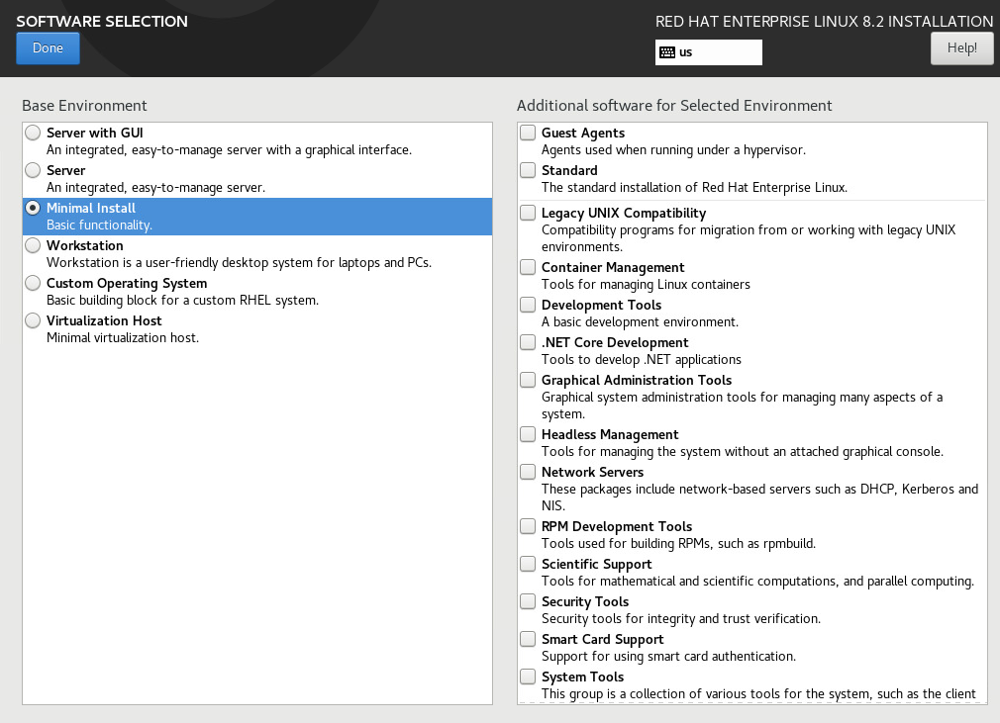

Full Stack Quickstart
This quickstart will get you "up and running" with the HelperNode so you can install OpenShift 4. HelperNode v2 will help you install OpenShift using the Platform Agnostic UPI install method.
Prerequisites
I will be using the following for my HelperNode:
- CentOS 8
- 50GB HD
- 4 vCPUs
- 8 GB RAM
It's important to note that I used the "Minimal" install profile. Using this install profiles minimizes the risk of conflicts on the host.

The network configuration for this example is as follows:
- IP -
192.168.7.77 - NetMask -
255.255.255.0 - Default Gateway -
192.168.7.1 - Upstream DNS Servers -
8.8.8.8,8.8.4.4
Once the host is installed, you can install the needed packages for the HelperNode.
NOTE: The package
bash-completionis optional but helpful.
yum -y install bash-completion podman
Next, install the helpernodectl CLI utility binary and put it somehwere
in your $PATH, in my example I'm installing it in /usr/local/bin
curl -LO https://github.com/RedHatOfficial/ocp4-helpernode/releases/download/v2alpha1/helpernodectl
mv helpernodectl /usr/local/bin/
chmod +x /usr/local/bin/helpernodectl
Enable bash completion
source <(helpernodectl completion bash)
Preflight Checks
Now that you have the binary, perform preflight checks to see if there are any potential issues.
# helpernodectl preflight
INFO[0000] RUNNING PREFLIGHT TASKS
INFO[0000] Running firewall checks
INFO[0001] Preflight checks for Firewall Firewall Issues=10
INFO[0001] Starting Port Checks
INFO[0001] Preflight checks for Ports Port Issues=0
INFO[0001] Starting Systemd Checks
INFO[0001] Preflight checks for Systemd Systemd Issues=0
INFO[0001] Preflight Summary FWRules=10 PortCheck=0 SystemdCheck=0
FATA[0001] Cannot Start, preflight errors found
This shows that I have 10 potential firewall rules that are not in place. Preflight also checks for port conflicts (in case you're running other services, NOT recomended btw) and Systemd conflicts as well.
At this point we recommend the users to handle these manually. For more information about what ports are needed, consult the preflight cli documentation.
There is an experimental flag --fix-all that tries to add firewall rules and disable conflicting systemd service.
# helpernodectl preflight --fix-all
INFO[0000] RUNNING PREFLIGHT TASKS
INFO[0000] ==========================BESTEFFORT IN FIXING ERRORS============================
INFO[0000] Running firewall checks
INFO[0001] OPENING PORT: 6443/tcp
INFO[0002] OPENING PORT: 22623/tcp
INFO[0003] OPENING PORT: 8080/tcp
INFO[0004] OPENING PORT: 9000/tcp
INFO[0005] OPENING PORT: 67/udp
INFO[0006] OPENING PORT: 53/tcp
INFO[0007] OPENING PORT: 53/udp
INFO[0008] OPENING PORT: 80/tcp
INFO[0009] OPENING PORT: 443/tcp
INFO[0010] OPENING PORT: 69/udp
INFO[0011] Preflight checks for Firewall Firewall Issues=10 Firewall rules added=10
INFO[0011] Starting Port Checks
INFO[0011] Preflight checks for Ports Port Issues=0
INFO[0011] Starting Systemd Checks
INFO[0011] Preflight checks for Systemd Systemd Issues=0
INFO[0011] Preflight Summary FWRules=10 PortCheck=0 SystemdCheck=0
Note, use with caution.
Once the cli reports No preflight errors found, you can proceed.
# helpernodectl preflight
INFO[0000] RUNNING PREFLIGHT TASKS
INFO[0000] Running firewall checks
INFO[0001] Preflight checks for Firewall Firewall Issues=0
INFO[0001] Starting Port Checks
INFO[0001] Preflight checks for Ports Port Issues=0
INFO[0001] Starting Systemd Checks
INFO[0001] Preflight checks for Systemd Systemd Issues=0
INFO[0001] Preflight Summary FWRules=0 PortCheck=0 SystemdCheck=0
INFO[0001] No preflight errors found
Setting Up The YAML File
You will need to set up your YAML file for your environment. This includes things like knowing the MAC Addresses of the OpenShift nodes and other infrastructure related things. Please consult the YAML File Documentation for more details.
As I'm going to do a "Full Stack" install (using all services). I will use the following YAML file.
version: v2
arch: "x86_64"
helper:
name: "helper"
ipaddr: "192.168.7.77"
networkifacename: "ens3"
dns:
domain: "example.com"
clusterid: "ocp4"
forwarder1: "8.8.8.8"
forwarder2: "8.8.4.4"
dhcp:
router: "192.168.7.1"
bcast: "192.168.7.255"
netmask: "255.255.255.0"
poolstart: "192.168.7.10"
poolend: "192.168.7.30"
ipid: "192.168.7.0"
netmaskid: "255.255.255.0"
bootstrap:
name: "bootstrap"
ipaddr: "192.168.7.20"
macaddr: "52:54:00:60:72:67"
disk: vda
masters:
- name: "master0"
ipaddr: "192.168.7.21"
macaddr: "52:54:00:e7:9d:67"
disk: vda
- name: "master1"
ipaddr: "192.168.7.22"
macaddr: "52:54:00:80:16:23"
disk: vda
- name: "master2"
ipaddr: "192.168.7.23"
macaddr: "52:54:00:d5:1c:39"
disk: vda
workers:
- name: "worker0"
ipaddr: "192.168.7.11"
macaddr: "52:54:00:f4:26:a1"
disk: vda
- name: "worker1"
ipaddr: "192.168.7.12"
macaddr: "52:54:00:82:90:00"
disk: vda
It's important to note that helper.ipaddr and helper.networkifacename are found using the ip addr command.
# ip addr
1: lo: <LOOPBACK,UP,LOWER_UP> mtu 65536 qdisc noqueue state UNKNOWN group default qlen 1000
link/loopback 00:00:00:00:00:00 brd 00:00:00:00:00:00
inet 127.0.0.1/8 scope host lo
valid_lft forever preferred_lft forever
inet6 ::1/128 scope host
valid_lft forever preferred_lft forever
2: ens3: <BROADCAST,MULTICAST,UP,LOWER_UP> mtu 1500 qdisc fq_codel state UP group default qlen 1000
link/ether 52:54:00:53:9c:c9 brd ff:ff:ff:ff:ff:ff
inet 192.168.7.77/24 brd 192.168.7.255 scope global noprefixroute ens3
valid_lft forever preferred_lft forever
inet6 fe80::ca70:e130:a9dd:71e8/64 scope link noprefixroute
valid_lft forever preferred_lft forever
Prepulling Images
You can, optionally, prepull images to make startup faster
helpernodectl pull
This isn't required, as the start command will pull them anyway, but will speed up startup.
Starting Services
Once I have my YAML file ready and images pulled, I can start the
HelperNode services. I do this by passing --config and the path to my
config file.
# helpernodectl start --config helpernode.yaml
INFO[0001] Using --config file:helpernode.yaml
INFO[0001] Found a configuration
INFO[0001] RUNNING PREFLIGHT TASKS
INFO[0001] Running firewall checks
INFO[0002] Preflight checks for Firewall Firewall Issues=0
INFO[0002] Starting Port Checks
INFO[0002] Preflight checks for Ports Port Issues=0
INFO[0002] Starting Systemd Checks
INFO[0002] Preflight checks for Systemd Systemd Issues=0
INFO[0002] Preflight Summary FWRules=0 PortCheck=0 SystemdCheck=0
INFO[0002] No preflight errors found
INFO[0002] Starting Containers
======================
INFO[0002] Validationg configuration in helpernode.yaml
INFO[0002] Starting helpernode-dns
INFO[0002] Validationg configuration in helpernode.yaml
INFO[0002] Starting helpernode-dhcp
INFO[0003] Validationg configuration in helpernode.yaml
INFO[0003] Starting helpernode-http
INFO[0004] Validationg configuration in helpernode.yaml
INFO[0004] Starting helpernode-loadbalancer
INFO[0005] Validationg configuration in helpernode.yaml
INFO[0005] Starting helpernode-pxe
Note that a preflight check is done as part of the starting process. You can skip these checks (to speed up startup, if you've already done preflight) by passing the
--skip-preflightoption.
Once startup as finsihed, you can check to see if it's running.
# helpernodectl status
Names Status Image
helpernode-pxe Up 38 seconds ago quay.io/helpernode/pxe:latest
helpernode-loadbalancer Up 40 seconds ago quay.io/helpernode/loadbalancer:latest
helpernode-http Up 41 seconds ago quay.io/helpernode/http:latest
helpernode-dhcp Up 42 seconds ago quay.io/helpernode/dhcp:latest
helpernode-dns Up 42 seconds ago quay.io/helpernode/dns:latest
Obtaining The OCP Clients
In order to install OpenShift, I will need the clients. The HelperNode cli
utility can fetch them for you by simply running the get-clients command
# helpernodectl get-clients
INFO[0000] Getting file openshift-client-linux.tar.gz
INFO[0000] Getting file openshift-install-linux.tar.gz
INFO[0000] Getting file helm.tar.gz
This will fetch the clients into your current working directory.
# ls -1 *.gz
helm.tar.gz
openshift-client-linux.tar.gz
openshift-install-linux.tar.gz
Go ahead and extract them into your $PATH; I did mine on /usr/local/bin
tar -xzf openshift-client-linux.tar.gz -C /usr/local/bin/
tar -xzf openshift-install-linux.tar.gz -C /usr/local/bin/
tar -xzf helm.tar.gz
mv linux-amd64/helm /usr/local/bin/
rm -f /usr/local/bin/README.md
You should now have oc, openshift-install, kubectl, and helm in your path
# ls -l /usr/local/bin/{oc,openshift-install,kubectl,helm}
-rwxr-xr-x. 1 3434 3434 41607168 Oct 26 08:36 /usr/local/bin/helm
-rwxr-xr-x. 2 root root 74528264 Nov 4 13:38 /usr/local/bin/kubectl
-rwxr-xr-x. 2 root root 74528264 Nov 4 13:38 /usr/local/bin/oc
-rwxr-xr-x. 1 root root 353038336 Nov 6 04:41 /usr/local/bin/openshift-install
Installing OpenShift
I will take you installing OpenShift at a HIGH level. Please visit the Official OpenShift Installation Documentation Site for more specific details about installing OpenShift.
In order to install OpenShift you will need an ssh key. If you don't have one, create one:
ssh-keygen
You'll also need a place to store your pull secret. I use ~/.openshift as the location:
mkdir -p ~/.openshift
Visit cloud.redhat.com and select "Bare Metal" then "UPI". Download your pull secret and save it under ~/.openshift/pull-secret
# ls -1 ~/.openshift/pull-secret
/root/.openshift/pull-secret
Now create an install directory for the openshift-install command to use.
mkdir ~/ocp4
cd ~/ocp4
Next, create an install-config.yaml file. Here is a sample for my environment:
NOTE: Make sure to change for your environment where applicable.
cat <<EOF > install-config.yaml
apiVersion: v1
baseDomain: example.com
compute:
- hyperthreading: Enabled
name: worker
replicas: 0
controlPlane:
hyperthreading: Enabled
name: master
replicas: 3
metadata:
name: ocp4
networking:
clusterNetworks:
- cidr: 10.254.0.0/16
hostPrefix: 24
networkType: OpenShiftSDN
serviceNetwork:
- 172.30.0.0/16
platform:
none: {}
pullSecret: '$(< ~/.openshift/pull-secret)'
sshKey: '$(< ~/.ssh/id_rsa.pub)'
EOF
Next, create the OpenShift install manifest.
# openshift-install create manifests
INFO Consuming Install Config from target directory
WARNING Making control-plane schedulable by setting MastersSchedulable to true for Scheduler cluster settings
INFO Manifests created in: manifests and openshift
Edit the manifests/cluster-scheduler-02-config.yml Kubernetes manifest file to prevent Pods from being scheduled on the control plane machines by setting mastersSchedulable to false.
Skip this step if you're installing a compact cluster!
sed -i 's/mastersSchedulable: true/mastersSchedulable: false/g' manifests/cluster-scheduler-02-config.yml
It should look something like this after you edit it.
# cat manifests/cluster-scheduler-02-config.yml
apiVersion: config.openshift.io/v1
kind: Scheduler
metadata:
creationTimestamp: null
name: cluster
spec:
mastersSchedulable: false
policy:
name: ""
status: {}
Next, generate the ignition configs
# openshift-install create ignition-configs
INFO Consuming Common Manifests from target directory
INFO Consuming Openshift Manifests from target directory
INFO Consuming Worker Machines from target directory
INFO Consuming OpenShift Install (Manifests) from target directory
INFO Consuming Master Machines from target directory
INFO Ignition-Configs created in: . and auth
Now you need copy these ignition configs to the http HelperNode
service. You do this by running the copy-ign command.
NOTE: You need to pass
--dirand the path where the ignition files are located.
# helpernodectl copy-ign --dir ~/ocp4/
INFO[0000] Copying over /root/ocp4/bootstrap.ign to http container
INFO[0000] Copying over /root/ocp4/master.ign to http container
INFO[0000] Copying over /root/ocp4/worker.ign to http container
Install RHCOS
PXE boot into your Instances and they should load up the right configuration based on the MAC address. The DHCP server is set up with MAC address filtering and the PXE service is configured to load the right config to the right machine (based on mac address).
Boot/install the VMs/Instances in the following order
- Bootstrap
- Masters
- Workers
On your laptop/workstation visit the status page
firefox http://192.168.7.77:9000
NOTE: Make sure you don't expose this port in public cloud environments!
You'll see the bootstrap turn "green" and then the masters turn "green", then the bootstrap turn "red". This is your indication that you can continue.
You need to make sure your DNS on the node is setup correctly. You'll
need to point to localhost (or 127.0.0.1) in order to connect to
your cluster.
This is what I have in my /etc/resolv.conf
# cat /etc/resolv.conf
# Generated by NetworkManager
nameserver 127.0.0.1
nameserver 8.8.8.8
Wait For Install
The boostrap VM actually does the install for you; you can track it with the following command.
openshift-install wait-for bootstrap-complete --log-level debug
Once you see this message below...
DEBUG OpenShift Installer 4.6.4
DEBUG Built from commit 6e02d049701437fa81521fe981405745a62c86c5
INFO Waiting up to 20m0s for the Kubernetes API at https://api.ocp4.example.com:6443...
INFO API v1.19.0+9f84db3 up
INFO Waiting up to 30m0s for bootstrapping to complete...
DEBUG Bootstrap status: complete
INFO It is now safe to remove the bootstrap resources
DEBUG Time elapsed per stage:
DEBUG Bootstrap Complete: 6m42s
INFO Time elapsed: 6m42s
...you can continue...at this point you can delete/poweroff the bootstrap server.
NOTE: You can repourpose this machine as another node!
Finish Install
First, login to your cluster
export KUBECONFIG=/root/ocp4/auth/kubeconfig
Your install may be waiting for worker nodes to get approved. Normally the machineconfig node approval operator takes care of this for you. However, in a Platform Agnostic UPI install, this needs to be done manually. Check pending CSRs with the following command.
oc get csr
You can approve all pending CSRs in "one shot" with the following
oc get csr -o go-template='{{range .items}}{{if not .status}}{{.metadata.name}}{{"\n"}}{{end}}{{end}}' | xargs oc adm certificate approve
You may have to run this multiple times depending on how many workers you have and in what order they come in. Keep a watch on these CSRs
watch oc get csr
In order to setup your registry, you first have to set the managementState to Managed for your cluster
oc patch configs.imageregistry.operator.openshift.io cluster --type merge --patch '{"spec":{"managementState":"Managed"}}'
For PoCs, using emptyDir is okay (to use PVs follow this doc)
oc patch configs.imageregistry.operator.openshift.io cluster --type merge --patch '{"spec":{"storage":{"emptyDir":{}}}}'
If you need to expose the registry, run this command
oc patch configs.imageregistry.operator.openshift.io/cluster --type merge -p '{"spec":{"defaultRoute":true}}'
To finish the install process, run the following
openshift-install wait-for install-complete
Note: You can watch the operators running with
oc get clusteroperatorsin another window with awatchto see it progress
Login to the web console
The OpenShift 4 web console will be running at https://console-openshift-console.apps.{{ dns.clusterid }}.{{ dns.domain }} (e.g. https://console-openshift-console.apps.ocp4.example.com)
- Username: kubeadmin
- Password: the output of
cat /root/ocp4/auth/kubeadmin-password
Upgrade
If you didn't install the latest release, then just run the following to upgrade.
oc adm upgrade --to-latest
Scale the router if you need to (if, for example, you installed a compact cluster or are using 3 workers)
oc patch --namespace=openshift-ingress-operator --patch='{"spec": {"replicas": 3}}' --type=merge ingresscontroller/default
DONE
Your cluster should be ready to use!